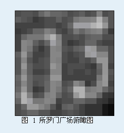

第一行包含用一个空格隔开的2个整数L和H，其中L表示所罗门广场包含的大理石板的列数，5<=L<=100，H表示所罗门广场包含的大理石板的行数, 5<=H<=100。接下来的H行，每行有L个由一个空格隔开的整数，不妨记接下来的第i行，第J列的整数为Vij，则有0<=Vij<=255，。

第一行包含用一个空格隔开的2个整数L和H，其中L表示所罗门广场包含的大理石板的列数，5<=L<=100，H表示所罗门广场包含的大理石板的行数, 5<=H<=100。接下来的H行，每行有L个由一个空格隔开的整数，不妨记接下来的第i行，第J列的整数为Vij，则有0<=Vij<=255，。
17 18
74 82 82 76 101 114 97 97 92 77 86 92 77 81 121 75 83
89 82 74 61 67 74 77 90 75 83 119 125 121 138 175 124 81
69 64 64 69 69 75 75 69 72 108 160 162 166 178 193 145 82
57 64 75 99 110 122 117 75 64 81 119 110 119 127 137 91 61
70 97 113 113 114 148 170 127 78 72 82 72 89 96 96 78 72
69 128 123 92 72 108 161 141 72 61 69 72 110 102 75 70 65
69 141 118 75 59 75 130 123 83 72 89 108 166 156 108 97 72
92 148 108 69 64 78 130 130 78 66 72 83 158 167 138 138 72
85 143 80 66 72 80 141 121 72 66 64 80 72 92 150 150 74
83 146 92 75 78 85 146 134 66 75 72 75 66 61 107 146 69
82 139 89 69 69 78 141 141 64 75 64 69 72 64 93 144 82
96 148 104 82 83 95 148 148 70 69 69 69 64 69 113 155 78
91 143 104 78 84 104 141 127 72 86 128 114 61 72 128 146 69
101 145 96 61 70 102 139 117 80 97 175 175 114 120 132 97 76
119 170 127 75 81 124 141 104 75 84 152 169 139 135 103 57 55
101 172 162 115 119 142 127 70 75 72 110 104 87 84 57 53 32
78 110 154 154 132 116 80 57 91 99 81 70 53 50 48 18 14
72 80 107 99 83 81 69 64 77 87 76 70 55 53 48 18 10
2
03